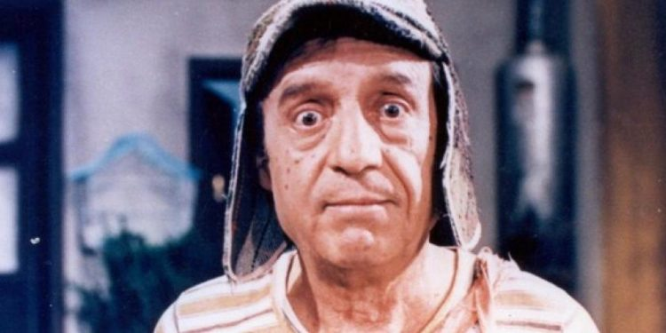

Por Chaves do Oito
Atualizado em:
Clique para ir para a lista de links

O primeiro capítulo de El Chavo del Ocho foi transmitido em 1972. O esquete mais antigo que se tem noção é El ropavejero.
"Não se lembra que eu te vendi um mapa pra procurar um tesouro e você nunca me pagou nada?"
"Mas eu não encontrei o tesouro!"
"Mas você procurou?"
"Sim!"
"Pois então! Eu vendi pra você um mapa que servia para procurar tesouros, não para encontrá-los!"
"Ah bom, se é assim, sim..."